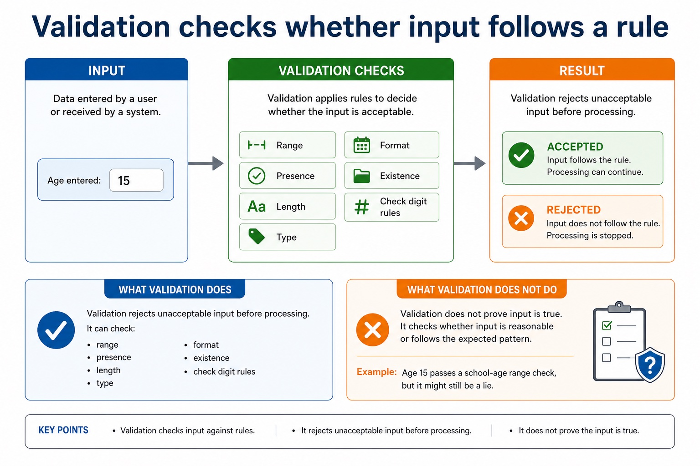
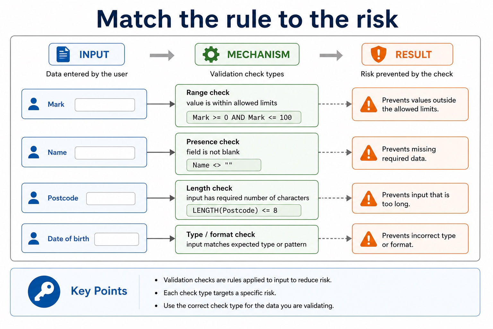
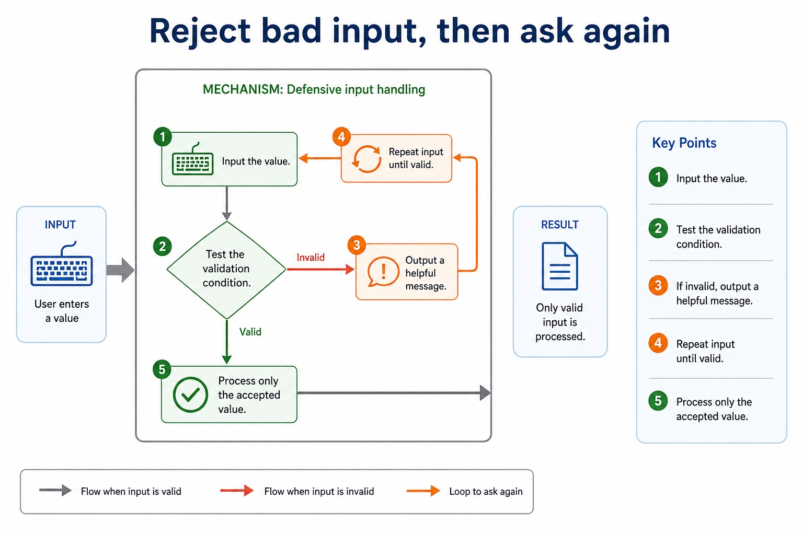
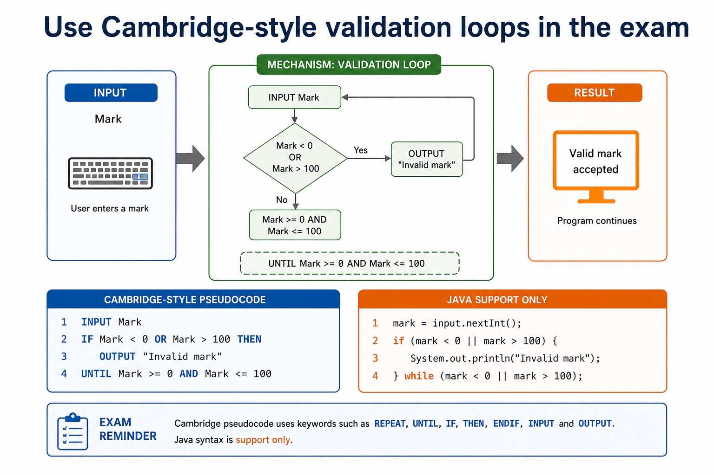

Validation is the polite bouncer at the algorithm door.
Validation checks whether input is acceptable before it is processed. Defensive input handling repeats
input until valid data is supplied, so later calculations do not have to wrestle with nonsense. The aim is
not to prove the data is true; it is to check it follows the rules.
Identifyrange, presence, length, type/format and check digit validation
WriteCambridge-style validation loops using WHILE or REPEAT...UNTIL
Explainwhy validation reduces errors but does not guarantee data is correct
INPUT Age
check rule
Age >= 11 AND Age <= 18?
if invalid
Ask again
if valid
Process Age
Invalid input should be rejected before it sneaks into the calculation wearing a fake moustache.
Why this matters
Paper 2 often gives a rule such as 0-100 or 8 characters. The marks come from applying the rule precisely.
Common trap
Validation checks acceptability, not truth. A valid age of 15 might still be typed by someone who is actually 16.
Warm-up hook
The school form that accepts age 900
Which validation rule would stop a student entering 900 as their age?
Choose the best validation rule.
Knowledge explanation
Validation checks whether input follows a rule
What validation does
Validation rejects unacceptable input before processing. It can check range, presence, length, type, format, existence or check digit rules.
Chinese support: validation = 有效性检查；defensive input = 防御式输入。
What validation does not do
Validation does not prove input is true. It checks whether input is reasonable or follows the expected pattern.
Example: age 15 passes a school-age range check, but it might still be a lie.
Validation checks whether input follows a rule

Validation checks whether input follows a rule: source-grounded visual explanation.
Lesson fact: Knowledge explanation
Lesson fact: What validation does
Lesson fact: Validation rejects unacceptable input before processing. It can check range, presence, length, type, format, existence or check digit rules.
Lesson fact: What validation does not do
Lesson fact: Validation does not prove input is true. It checks whether input is reasonable or follows the expected pattern.
Lesson fact: Example: age 15 passes a school-age range check, but it might still be a lie.
Validation check types
Match the rule to the risk
Check
Purpose
Example
Range check
value is within allowed limits
Mark >= 0 AND Mark <= 100
Presence check
field is not blank
Name <> ""
Length check
input has required number of characters
LENGTH(Postcode) <= 8
Type / format check
input matches expected type or pattern
Date has form DD/MM/YYYY
Check digit
detects many typing errors in a code
barcode or ISBN-style code
Match the rule to the risk

Match the rule to the risk: source-grounded visual explanation.
Lesson fact: Validation check types
Lesson fact: Range check
Lesson fact: value is within allowed limits
Lesson fact: Mark >= 0 AND Mark <= 100
Lesson fact: Presence check
Lesson fact: field is not blank
Lesson fact: Name <> ""
Lesson fact: Length check
Lesson fact: input has required number of characters
Lesson fact: LENGTH(Postcode) <= 8
Lesson fact: Type / format check
Lesson fact: input matches expected type or pattern
Defensive input handling
Reject bad input, then ask again
1Input the value.
2Test the validation condition.
3If invalid, output a helpful message.
4Repeat input until valid.
5Process only the accepted value.
Reject bad input, then ask again

Reject bad input, then ask again: source-grounded visual explanation.
Lesson fact: Defensive input handling
Lesson fact: 1 Input the value.
Lesson fact: 2 Test the validation condition.
Lesson fact: 3 If invalid, output a helpful message.
Lesson fact: 4 Repeat input until valid.
Lesson fact: 5 Process only the accepted value.
Pseudocode vs Java
Use Cambridge-style validation loops in the exam
Cambridge-style pseudocode
REPEAT
INPUT Mark
IF Mark < 0 OR Mark > 100 THEN
OUTPUT "Invalid mark"
ENDIF
UNTIL Mark >= 0 AND Mark <= 100
Java support only
do {
mark = input.nextInt();
if (mark < 0 || mark > 100) {
System.out.println("Invalid mark");
}
} while (mark < 0 || mark > 100);
Exam reminder: Cambridge pseudocode uses keywords such as REPEAT, UNTIL, IF, THEN, ENDIF, INPUT and OUTPUT. Java syntax is support only.
Use Cambridge-style validation loops in the exam

Use Cambridge-style validation loops in the exam: source-grounded visual explanation.
Lesson fact: Pseudocode vs Java
Lesson fact: Cambridge-style pseudocode
Lesson fact: INPUT Mark
Lesson fact: IF Mark < 0 OR Mark > 100 THEN
Lesson fact: OUTPUT "Invalid mark"
Lesson fact: UNTIL Mark >= 0 AND Mark <= 100
Lesson fact: Java support only
Lesson fact: mark = input.nextInt();
Lesson fact: if (mark < 0 || mark > 100) {
Lesson fact: System.out.println("Invalid mark");
Lesson fact: } while (mark < 0 || mark > 100);
Lesson fact: Exam reminder: Cambridge pseudocode uses keywords such as REPEAT, UNTIL, IF, THEN, ENDIF, INPUT and OUTPUT. Java syntax is support only.
Interactive check classifier
Choose the validation type
Choose a rule to classify it.
Interactive input tester
Test a mark against 0-100
Enter a mark and test whether it is valid.
Test a mark against 0-100
Test a mark against 0-100: source-grounded visual explanation.
Lesson fact: Interactive input tester
Lesson fact: Enter a mark and test whether it is valid.
Interactive validation builder
Generate a Cambridge-style validation loop
Choose a scenario to generate pseudocode.
Worked examples
Validation patterns
Practice with instant checking
Validation precision
Type concise answers. Use Show answer after committing to a response.
Mistake debugging
Fix validation mistakes
Exam-style questions
Original Cambridge-style validation questions with expandable MS
These questions target validation rules, defensive loops and precise Boolean conditions. MS uses strict Cambridge-style expectations.
Summary
Validation checklist
RuleState the exact acceptable condition.
LoopRepeat input while invalid or until valid.
LimitValidation checks acceptability, not real-world truth.
Homework
Clear tasks for consolidation
Task 1: Validation tableFor mark, date, password and surname, name the best validation check and write the valid condition.Task 2: Pseudocode loopWrite Cambridge-style pseudocode that repeatedly inputs an age until it is from 11 to 18 inclusive.Task 3: ExplanationExplain why validation can reject impossible data but cannot prove that a user told the truth.